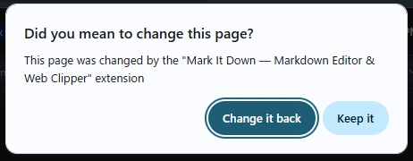

Thanks for installing
Your new tab is now a Markdown workspace.
If Chrome shows a dialog
Click "Keep it" to start Mark It Down in your new tab.

Changed your mind? Click "Change it back" in the dialog, or simply remove the extension — your new tab will return to normal instantly.
Try pressing Ctrl + T to open a new tab.
Web Clipper · Markdown Editor · Side Panel — a note-taking app that lives entirely in your browser.
What you can do
- Web Clipper — Right-click any page to save it as Markdown
- Markdown Editor — Write and format with live preview, LaTeX math, Mermaid diagrams
- Side Panel — Open beside any webpage for side-by-side editing (click the toolbar icon)
About your data
- All notes stored locally in your browser
- No cloud sync by default (optional Git backup)
- Clearing browser cache does not delete your notes
- Removing the extension deletes all data — use the export feature first